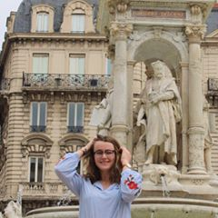

<!DOCTYPE htlm>
<htlm>
	<head>
		<title>Capucine SIMON's profile</title>
		<meta name="description" content="This si the profile of Capucine">
		<meta charset="UTF-8">
		<script src="https://kit.fontawesome.com/7e37c1f049.js" crossorigin="anonymous"></script> 
		<link href="https://fonts.googleapis.com/css?family=Raleway:300,400,700|Source+Sans+Pro:200,300,400,700&display=swap" rel="stylesheet">
		<link rel="stylesheet" type="text/css" href="style.css">
	</head>

	<body>
		<div class="container">
			<div class="card-white" id="introduction">	

				<h1> Hello, I'm Capucine SIMON </h1>
					
					<p>
					Motivated and hard-working freshman
					student at the leading management school,
					IÉSEG in Lille,FR. 
					</p>
						<a href="https://www.youtube.com/" target="_blank" class="btn-blue">See a hobby</a>
			</div>
			<div class="card-white">
				<h2><strong>Education</strong></h2>
					<p>
					2019-2024
					<em>IÉSEG SCHOOL OF MANAGEMENT</em>, Lille, FRANCE
					Bachelor in English Track.</p>
					<p>
					2018-2019
					<em>JEANNE D'ARC HIGH SCHOOL</em>, Cessy, FRANCE
					French Baccalaureate with major in Sciences and Mathematics (awarded with average grade A).</p>
					<p>
					2017-2018
					<em>HAMPTON HIGH SCHOOL</em>, Allison park, PA, USA
					High school Diploma, awarded after a year as an AFS exchange student.
					</p>
			</div>
			<div class="card-white">
				<h2><strong>Professional career</strong></h2>
					<h3><em>WAITRESS</em></h3>
					<p>
					Fleur de pains, Switzerland| August 2019</p>
					<ul>
						<li>Responsible for opening and closing the restaurant</li>
						<li>Taking and filling order for a restaurant indoor and outdoor</li>
						<li>Preparing food like salads, sandwich, panini and beverage like coffee, tea, cappuccino </li>
					</ul>
					<h3><em>BABY-SITTER AND TUTOR</em></h3>
					<p>Particular customers | Since 2013</p>
					<ul>
						<li>Taking care of children from 6 months to 10 years old</li>
						<li>Helping for their homework and responsible during their bedtime</li>
						<li>Tutoring for Mathematics and French elementary lessons</li>
					</ul>
			</div>
			<div class="card-white">
				<h2><strong>Skills</strong></h2>
					<p>IT: Office 2016, Windows 10, Excel, Word, Powerpoint, Solidworks and SketchUp</p>
					<p>Languages: </p>
						<ul>
							<li>French (native)</li>
							<li>English (fluent)</li>
							<li>German (proficient)</li>
							<li>Spanish (beginner)</li>
						</ul>
					<p>Additional: Driving license (car ad motorcycle) and First Aid (PSC1)</p>
			</div>
			<div class="card-white">
				<h2><strong>Follow me</strong></h2>
				<ul class="list-inline">
					<li>
						<a href="https://www.facebook.com/capucine.simon.9461" target="_blank">
							<i class="fab fa-facebook"></i>
						</a>
					</li>
					<li>
						<a href="https://www.instagram.com/capucine_simon/" target="_blank">
							<i class="fab fa-instagram"></i>
						</a>
					</li>
				</ul>
			</div>
		</div>
	</body>

</html>
